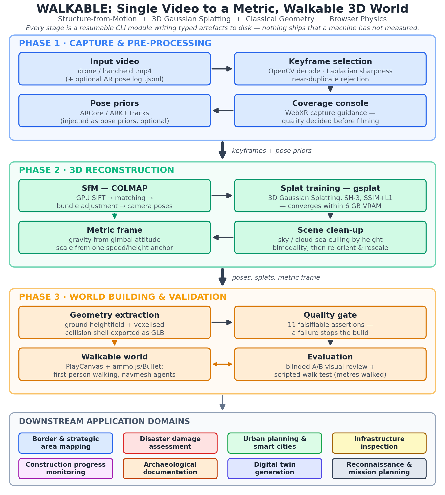

1. Project Overview
Most systems that rebuild a real scene into 3D stop at a picture of a model: you can orbit it, but you cannot stand inside it, and nothing about it knows what a metre is. This project builds the physical-usability half — a single-command pipeline that takes one ordinary video of a place and returns a world you can walk through in a browser, with gravity, collision, a metric ground surface, and automated proof that the floor is real. One command drives eighteen resumable stages: keyframe selection, camera-pose solving with COLMAP, Gaussian-splat training, metric-scale recovery, ground-surface extraction, collision-mesh generation, and a headless physics walk test, all guarded by an eleven-assertion quality gate.
2. Project Objectives
| # | Objective |
|---|---|
| O1 | Single video → walkable 3D world, one command. Convert an ordinary drone or handheld video into a photorealistic, navigable 3D world through one fully automated command — no manual modelling, no cloud dependency. |
| O2 | Metric, measurable reconstruction. Recover true metric scale and orientation from minimal operator input (a single speed or height anchor), so distances, areas, and ground surfaces in the model are physically meaningful. |
| O3 | Walkability, not just visuals. Derive physics-valid ground and collision geometry from the neural reconstruction, enabling first-person walking and autonomous agent navigation in the scanned scene. |
| O4 | Falsifiable quality on consumer hardware. Run every stage on a 6 GB laptop GPU and gate each build on automated acceptance tests (blind visual review, scripted walk tests), not subjective judgment. |
3. Impact Statement
This work lowers the cost of producing a usable 3D replica of a real place from hours of expert photogrammetry and expensive licensed software to a single command on an ordinary laptop. Because the output is metric and walkable rather than a view-only render, it directly serves disaster damage assessment, border and strategic area mapping, infrastructure inspection, construction progress monitoring, archaeological documentation, urban digital twins, and mission rehearsal — domains where decisions depend on measuring and moving through a scene, not merely looking at it. By combining the geometric guarantees of classical methods with the visual fidelity of neural rendering, and by refusing to ship any result that fails automated measurement, the pipeline provides a reproducible, low-cost foundation that researchers, engineers, and field teams can build upon.
4. Research Literature Survey
4.1 Core Reconstruction Methods
[1] Mildenhall et al. (2020) — NeRF: Representing Scenes as Neural Radiance Fields for View Synthesis (ECCV 2020). The foundational neural-rendering paper: a scene is stored as a fully connected network mapping 5-D coordinates (position + viewing direction) to colour and density, optimised by differentiable volume rendering. NeRF established photorealistic novel-view synthesis from photographs but requires per-scene optimisation measured in hours and produces no explicit surface — nothing to measure, collide with, or stand on. Our pipeline inherits the idea of a learned appearance field while rejecting its geometry as a physical substrate.
[2] Schönberger & Frahm (2016) — Structure-from-Motion Revisited (COLMAP, CVPR 2016). The reference implementation of incremental SfM: feature extraction, matching, and bundle adjustment producing camera poses and a sparse point cloud. COLMAP remains the accuracy baseline against which all neural pose estimators are compared, and it is robustly engineered and BSD-licensed. We adopt it as our pose solver because it runs within a 6 GB GPU budget and yields survey-grade registrations — the cost is runtime and fragility on blur, low texture, and rotation-only motion, which our keyframing and AR pose-prior stages are designed to absorb.
[3] Kerbl et al. (2023) — 3D Gaussian Splatting for Real-Time Radiance Field Rendering (ACM TOG / SIGGRAPH 2023). Represents the scene as 10⁵–10⁶ anisotropic 3-D Gaussians optimised from SfM points and rendered by rasterisation at interactive rates, reaching NeRF-class fidelity in minutes. This is the only representation that stays photorealistic from a single sparse video pass and trains on consumer hardware, which is why it forms our appearance stage. Its known gap — a splat cloud is not a surface — defines our downstream geometry problem.
[4] Huang et al. (2024) — 2D Gaussian Splatting for Geometrically Accurate Radiance Fields (SIGGRAPH 2024). Flattens 3-D Gaussians into surfels aligned to the underlying surface, adding depth-distortion and normal-consistency losses. It demonstrates that splat representations can yield geometrically accurate, meshable surfaces, validating our design rule that appearance (splats) and physics (extracted classical geometry) must be produced by separate, separately verified stages.
[5] Wang et al. (2025) — VGGT: Visual Geometry Grounded Transformer (CVPR 2025, Best Paper Award). A ~1B-parameter feed-forward transformer that predicts camera poses, depth, point maps, and tracks for hundreds of views in under a second — replacing per-scene optimisation with a single forward pass. It marks the direction of the field, but its outputs are up-to-scale only and its VRAM demands (13–21 GB for 100–200 frames) exceed a student laptop; we therefore treat feed-forward transformers as a scaling path rather than a foundation.
[6] Teed & Deng (2021) — DROID-SLAM: Deep Visual SLAM for Monocular, Stereo, and RGB-D Cameras (NeurIPS 2021). Couples learned optical flow with a differentiable dense bundle-adjustment layer, achieving robust real-time tracking on long sequences. It illustrates the deep-SLAM family whose strengths (long-trajectory odometry) and weaknesses (scale ambiguity, heavy dense depth) complement classical SfM; its MIT-licensed successor DPVO is our designated tracking backend for whole-flight sequences.
4.2 Application-Domain Literature
[7] Nex & Remondino (2014) — UAV for 3D Mapping Applications: A Review (Applied Geomatics 6(1)). A comprehensive survey of drone platforms, sensors, and photogrammetric workflows for 3-D mapping, covering flight planning, georeferencing, and accuracy budgets. It establishes the classical UAV-photogrammetry baseline our pipeline modernises and quantifies the accuracy achievable with and without ground control — the reference against which our anchor-based metric recovery is positioned.
[8] Ham et al. (2016) — Visual Monitoring of Civil Infrastructure Systems via Camera-Equipped UAVs (Visualization in Engineering 4). Reviews UAV-based visual monitoring of bridges, dams, and buildings, identifying flight-path planning, image quality, and automated defect detection as the open challenges. It motivates our capture-assist console (quality decided before filming) and our measurable-surface requirement for inspection-grade outputs.
[9] Rakha & Gorodetsky (2018) — Review of UAS Applications in the Built Environment (Automation in Construction 93). Surveys drone use across construction and facility management — progress tracking, surveying, and inspection — and shows that automated, repeatable capture is the key enabler. Their analysis of construction progress monitoring directly informs our time-series scenario: re-fly the same route, rebuild the model, and diff the geometry.
[10] Biljecki et al. (2015) — Applications of 3D City Models: State of the Art Review (ISPRS Int. J. Geo-Information 4(4)). Catalogues dozens of uses of 3-D city models — urban planning, energy estimation, emergency response, navigation — and introduces level of detail as the organising concept for city-scale twins. It frames our long-term target: our per-site walkable models are the high-fidelity leaf nodes of a city-scale digital twin.
Synthesis. The literature splits into three families: classical photogrammetry (accurate, measurable, slow), deep SLAM (fast, scale-ambiguous), and neural rendering (photorealistic, surface-free). No single family delivers a metric, walkable world from one video on consumer hardware. The gap identified across [1]–[10] — converting neural-rendering quality into physically usable geometry with verified scale — is precisely the contribution of this project.
5. Application Domains
(i) Border and strategic area mapping. A single drone pass over remote or sensitive terrain becomes a measurable 3-D model within minutes on a field laptop, with no cloud link required — critical where connectivity is denied. Metric terrain supports line-of-sight analysis, route planning, and change detection between repeat sorties over the same corridor.
(ii) Disaster damage assessment. After earthquakes, floods, or landslides, responders can film a structure or slope and obtain a walkable, measurable model before physical access is safe. Comparing pre- and post-event models quantifies deformation, debris volume, and accessible paths, while the walk-test layer verifies that simulated rescue routes are actually traversable.
(iii) Urban planning and smart cities. Planners gain photorealistic, navigable site models for design review, shadow and sight-line studies, and public consultation — stakeholders can walk through a proposal at true scale. Per-site models plug into city-scale 3-D frameworks [10] as high-fidelity local layers of a smart-city twin.
(iv) Infrastructure inspection. Bridges, towers, facades, and roofs filmed by drone become measurable models on which engineers can gauge cracks, spalling, and deformation in context rather than from isolated photographs [8]. The metric frame makes defect sizes and locations reportable in engineering units, and repeat captures track progression over time.
(v) Construction progress monitoring. Weekly re-flights of the same route yield comparable 3-D snapshots: earthwork volumes, structural completeness, and as-built vs. as-planned deviation become measurable quantities [9]. Because the pipeline is one command and laptop-class, it fits the cadence and budget of real construction sites.
(vi) Archaeological documentation. Excavations and heritage structures can be recorded non-invasively at each dig phase, producing a permanent, measurable 3-D archive even as the site itself is altered or backfilled [7]. Walkable models support remote scholarship, virtual museum exhibits, and condition monitoring of fragile monuments.
(vii) Digital twin generation. The pipeline converts a place into a metric, physics-enabled digital asset — the atomic unit of any digital twin. Its typed artefacts (heightfield, collider mesh, navmesh, splat scene) are exactly the layers twin platforms consume, and its one-command automation makes twin refresh practical rather than a one-off consultancy project.
(viii) Military reconnaissance and mission planning. A reconnaissance sortie's footage becomes a walkable rehearsal environment: teams can traverse the objective area virtually, measure sight lines and cover from the scanned geometry, and plan insertion routes against a navmesh baked from the real terrain. All processing is offline and laptop-class, matching denied-communications field constraints; the project deliberately uses only Apache/BSD/MIT components with no usage restrictions for this scope.
6. Methodology
The methodology is organised in three phases, shown in Figure 1.

Phase 1 — Capture and pre-processing. Input is an ordinary video (drone or handheld) with an optional ARCore/ARKit pose log. Frames are decoded with OpenCV, scored by variance-of-Laplacian sharpness, and reduced to a diverse keyframe set with near-duplicate rejection. A WebXR capture console guides the operator before filming — colouring each surface patch by how many distinct viewing directions have covered it — so reconstruction quality is decided at capture time, not discovered at training time.
Phase 2 — 3D reconstruction. Keyframes are registered by COLMAP (GPU SIFT → sequential/spatial matching → bundle adjustment); phone AR tracks are injected as native pose priors, which rescues rotation-heavy handheld footage and carries a metric translation into registration. Registered poses seed Gaussian-splat training on gsplat (spherical-harmonics degree 3, SSIM+L1 loss, hard Gaussian cap), which converges within 6 GB of VRAM. Orientation is taken from the gimbal attitude and metric scale from exactly one named anchor — cruise speed × duration, or camera height above ground — recorded in a single source-of-truth frame file. Sky and cloud-sea splats are culled by a bimodality test on the height histogram.
Phase 3 — World building and validation. Splat means are rasterised into a ground heightfield, and a voxelised collision shell is exported as a GLB trimesh; two candidate walk surfaces are built and the one the autopilot walks farther on is shipped. An eleven-assertion quality gate (coverage provenance, floor-not-ceiling, spawn support, route length, collider/route consistency, and more) fails the build rather than shipping a broken world. The validated assets load into a browser runtime (PlayCanvas + ammo.js/Bullet physics) for first-person walking and navmesh-driven autonomous agents, and acceptance is measured two ways: blinded A/B visual review against real frames, and scripted traversal measured in metres walked and waypoints reached.
Design principles. Every stage is a separate CLI module with typed artefacts on disk, so runs are resumable and inspectable; re-running a stage invalidates everything downstream; and the neural stage is trusted only with appearance — never with geometry, orientation, or scale.
7. Work Done
The pipeline is implemented and validated end-to-end (Python 3.12 + JavaScript ES2022, ~18,000 lines of first-party code across 35 stage modules, a 12-file test suite of ~550 assertions, and a vendored browser runtime requiring no build step). Table 2 summarises measured outcomes on the target hardware (RTX 3050 6 GB laptop).
| Result | Evidence |
|---|---|
| End-to-end automation | 18-stage resumable pipeline driven by one command (mvp.bat run <scene>) |
| Hardware budget | Peak training VRAM 1.26 GB at the high preset — 5× headroom under the 6 GB card |
| Visual quality | 10/10 blinded A/B pairs judged to be the same scene with no disqualifying artefact |
| Walkability | 65.3 m walked, 16/16 waypoints reached, 0 falls (up from 19.9 m, 1/20 before fixes) |
| Ground correctness | Viewer ground vs. physics ground discrepancy reduced from 0.101 m to 0.000 m |
| Metric priors | Synthetic 12 m AR walk reconstructs at scale 1.0000, 7 mm max camera deviation |
| Honest reporting | 2 of 8 test scenes still fail the route gate; the build reports this rather than hiding it |
Eleven numbered engineering iterations are documented with the measurement that changed each decision, including two recorded cases where a stated hypothesis was later shown wrong by evidence.
References
- Mildenhall, B., Srinivasan, P. P., Tancik, M., Barron, J. T., Ramamoorthi, R., & Ng, R. (2020). NeRF: Representing scenes as neural radiance fields for view synthesis. In European Conference on Computer Vision (ECCV), 405–421.
- Schönberger, J. L., & Frahm, J.-M. (2016). Structure-from-motion revisited. In IEEE Conference on Computer Vision and Pattern Recognition (CVPR), 4104–4113.
- Kerbl, B., Kopanas, G., Leimkühler, T., & Drettakis, G. (2023). 3D Gaussian splatting for real-time radiance field rendering. ACM Transactions on Graphics, 42(4), Article 139.
- Huang, B., Yu, Z., Chen, A., Geiger, A., & Gao, S. (2024). 2D Gaussian splatting for geometrically accurate radiance fields. ACM Transactions on Graphics, 43(4), Article 32.
- Wang, J., Chen, M., Karaev, N., Vedaldi, A., Rupprecht, C., & Novotny, D. (2025). VGGT: Visual geometry grounded transformer. In IEEE/CVF Conference on Computer Vision and Pattern Recognition (CVPR) — Best Paper Award.
- Teed, Z., & Deng, J. (2021). DROID-SLAM: Deep visual SLAM for monocular, stereo, and RGB-D cameras. In Advances in Neural Information Processing Systems (NeurIPS) 34, 16558–16569.
- Nex, F., & Remondino, F. (2014). UAV for 3D mapping applications: A review. Applied Geomatics, 6(1), 1–15.
- Ham, Y., Han, K. K., Lin, J. J., & Golparvar-Fard, M. (2016). Visual monitoring of civil infrastructure systems via camera-equipped unmanned aerial vehicles (UAVs): A review of related works. Visualization in Engineering, 4(1), Article 1.
- Rakha, T., & Gorodetsky, A. (2018). Review of unmanned aerial system (UAS) applications in the built environment: Towards automated building inspection procedures using drones. Automation in Construction, 93, 252–264.
- Biljecki, F., Stoter, J., Ledoux, H., Zlatanova, S., & Çöltekin, A. (2015). Applications of 3D city models: State of the art review. ISPRS International Journal of Geo-Information, 4(4), 2842–2889.